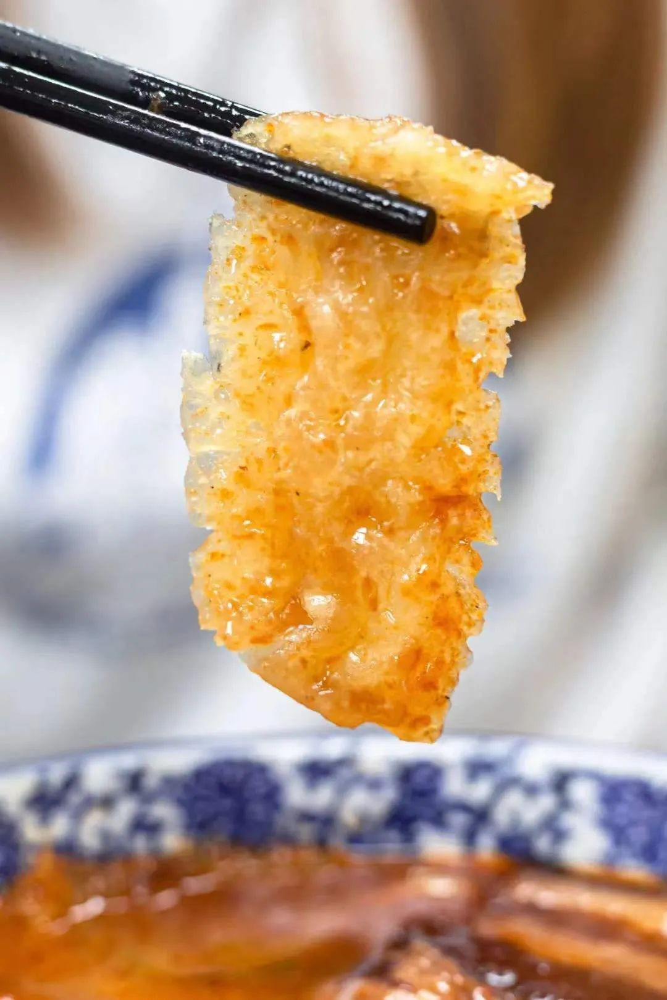
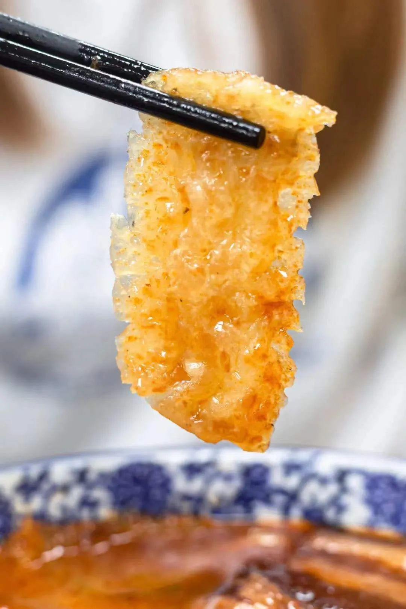
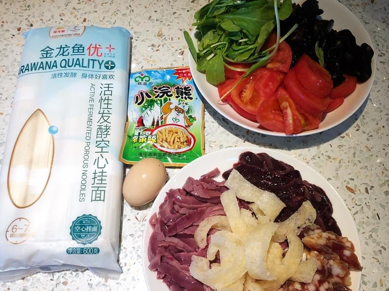
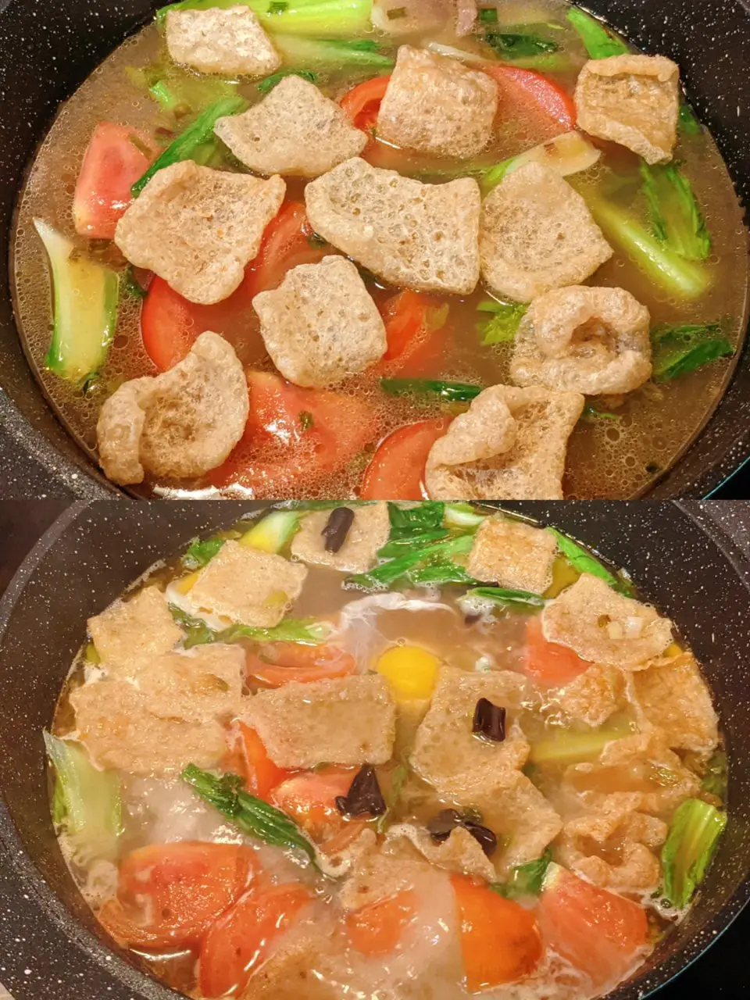
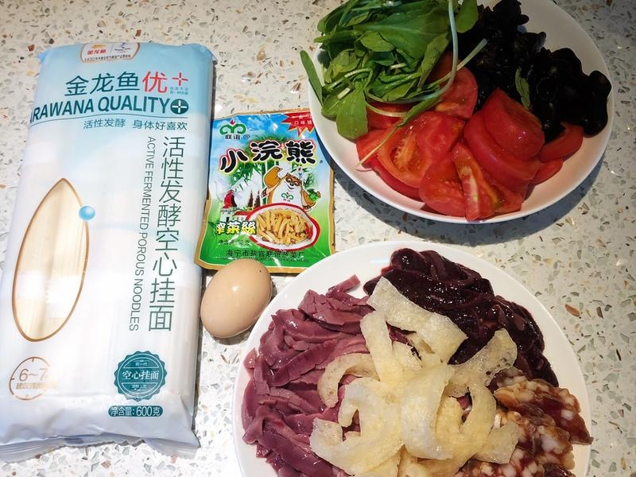
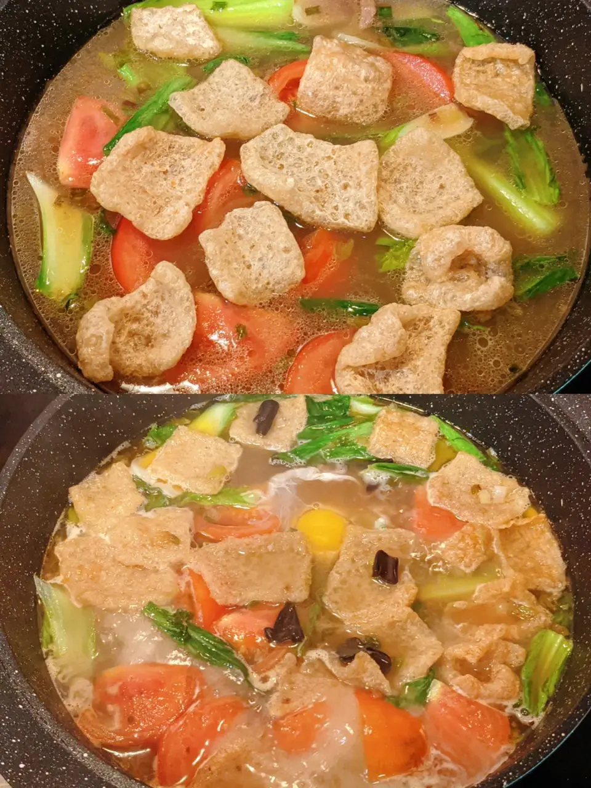

link for eval: here
Pi Du Mian, or Nanjing-Style Pork Skin Noodles, is a savory and slightly spicy noodle dish crafted with ingredients such as pork skin, noodles, bok choy, and an array of delightful garnishes. It holds a cherished place in the hearts of Nanjing locals, representing a beloved local delicacy. The recipe for this dish varies widely across households and street food vendors, each offering its unique twist. Here, the version I'm sharing is the one I'm most familiar with growing up.
Required Utensils:
Ingredients:
Key Information before you cook:
This particular culinary tradition holds a special place in my hometown, which is why most of the available references are in Chinese. The recipe is a culmination of information gathered from various sources, as different families have their unique ways of preparing these noodles. I have taken on the task of translating these Chinese sources into the recipe and description, though it's important to note that some nuances may be lost in translation.
English source: https://news.cgtn.com/news/2019-08-28/70-Years-Inherited-Pork-skin-noodles-at-a-Nanjing-diner-JuPe5W6gBW/index.html
Chinese sources:
Documentary video reference [26:36-29:33]: https://www.youtube.com/watch?v=dZlzlYR3euw
Baidu wiki: https://baike.baidu.com/item/%E7%9A%AE%E8%82%9A%E9%9D%A2/8964953
Chinese recipe page: https://www.xiachufang.com/recipe/106467684/
 

 




A great website for going in-depth about "authentic" Chinese food recipes. In addition to the recipe itself, it also covers a wide range of topics regarding ingredients, process, and where to shop. Information-wise, it is a great website, although the layout could be improved.
An ads-free recipe page (so rare), with interesting layouts, modern and bold color choices. While visually very engrossing, the visuals still serve the content well, very worth studying on a balance between visual and content.
A website with minimal clicks to get to a recipe related to slow cookers. Easy to navigate and showing the theme (slow cooker) well. The display and search page are visually pleasing: not too crowded but present a lot of information at the same time very well.
Strong visuals at first glance when entered, which shows one how this is a modern, design-oriented website. When I start scrolling, the content and layout are clean. Processing information and finding sources to read becomes a joy.
A creative agency with a great example of a professional web page, showcasing their design to the audience (people who might need them to do a creative design) well. Interesting uses of the grid system in website design.
Another creative studio, shows contrast and scale in web page design. Very visually intense and interesting to spend time scrolling for nuanced design tricks through the website.